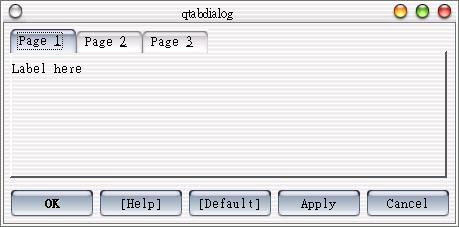
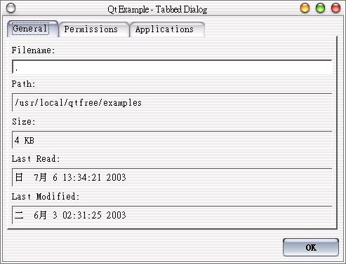

在版面配置上，我們還會使用QTabDialog來作功能頁的分類，它提供多個顯示頁，我們可以藉由上方的標籤來選擇所要的功能頁面，下面的程式簡單的示範如何將元件插入QWidget，然後將之插入一個標籤頁。
請編輯main.cpp：
#include <qapplication.h>
#include <qtabdialog.h>
#include <qlabel.h>
#include <qpushbutton.h>
#include <qlineedit.h>
int main(int argc, char** argv) {
QApplication app(argc, argv);
QTabDialog dialog;
QWidget *page = new QWidget();
dialog.resize(0, 200);
new QLabel("Label here", page); // 置入元件至QWidget
dialog.insertTab(page, "Page &1"); // 將QWidget插入一個標籤頁
page = new QWidget();
new QPushButton("Button here", page);
dialog.addTab(page, "Page &2");
page = new QWidget();
new QLineEdit("Linedit here", page);
dialog.addTab(page, "Page &3");
// 功能按鈕顯示
dialog.setDefaultButton("[Default]");
dialog.setHelpButton("[Help]");
dialog.setApplyButton();
dialog.setCancelButton();
QObject::connect(&dialog, SIGNAL(applyButtonPressed()),
qApp, SLOT(quit()));
app.setMainWidget(&dialog);
dialog.show();
return app.exec();
}
程式很簡單，下圖為執行的結果畫面：

在Qt的線上範例中，有個tabdialog程式也是在介紹QTabDialog的元件配置，程式基本上也相當簡單，您可以自行參考看看當中的程式碼，該範例的執行畫面如下所示：

|
|